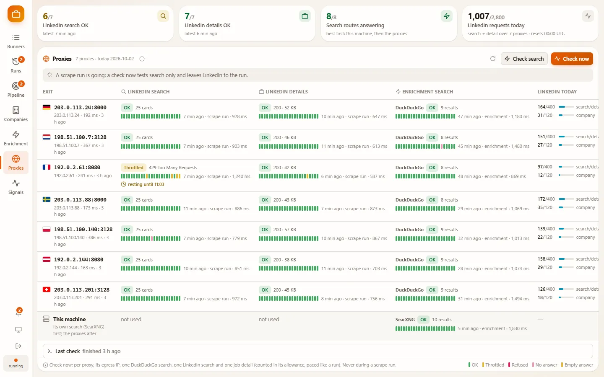
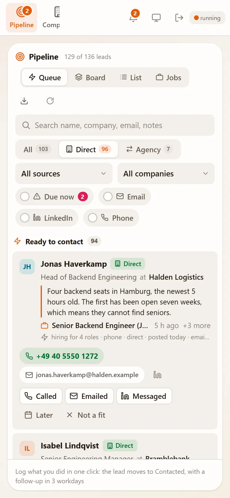
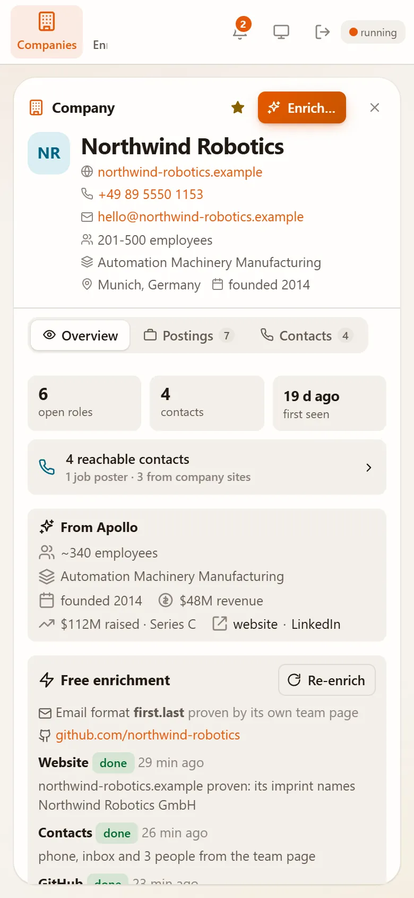
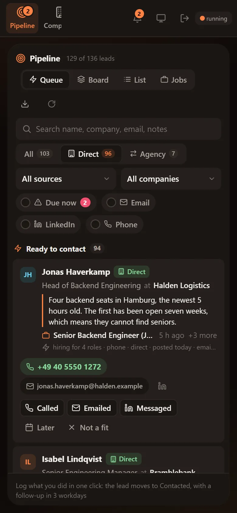

Job Pull
Hiring-signal engine for a software agency
- Client
- Software agency, internal tool
- Built
- September 2026
- Stack
- Python, aiohttp, PostgreSQL
- Runs on
- Docker, k3s, GitHub Actions
- Tests
- 608
- My role
- Design, build, deploy
Job Pull watches LinkedIn’s public job listings for companies hiring the kind of engineers an agency sells, and turns them into a ranked list of people to call. A company with four open backend roles is telling you where its team is short. I designed and built all of it: the scraper, the store, the enrichment worker, the operator’s panel, and the pipeline that ships it.
01Hiring is the buying signal
An agency that sells engineering capacity needs to know who is short of it this week. The job posting is the evidence. The company is the lead. So the product is not a job board: it is a list of companies sorted by how many roles they have open, with the right person at each one.
An operator saves a search once, a runner, and presses Run, or gives it a schedule. Everything else happens in the panel. Nobody opens a terminal.
Every company page answers the same three questions: how many roles are open, who is reachable, and what the tool already knows. The demo data on these screens is invented; the real store holds real contacts.
02Ten requests, not ten thousand
The automated side never signs in. No account, no cookies, nothing to ban. It reads the same public pages anyone can, slowly: four to nine seconds between requests, a daily allowance per proxy, a proxy taken out the moment it is blocked, and a run that stops rather than fall back to the home connection. Keeping each run small is the whole rate-limit strategy. Toggle what a run fetches and watch its cost.
One run · 50 postings95
- Search pages 5
- Job details 50
- Company pages 40

The proxies page shows each exit’s health and what it has spent today. When one earns a 429 it rests on its own while the others carry the run.
03A monitor, not a scraper
Every card a runner sees is stored as a sighting. That history answers what a list cannot: who started hiring this week, and which role just closed. A closed role usually means it was filled, and a team that just hired is a team onboarding. It is the strongest claim the tool makes, so it is the one it must never invent.
One absence proves nothing: a posting once returned a 404 and came back eight minutes later. So a role closes only after three misses in a row, by the runner that used to see it. A blocked run closes nothing. It did not look, it failed.
Senior Platform Engineer · seen by “platform engineer · Berlin”Open
04From a company to a name
A background worker takes each run’s new companies and works out the rest without touching LinkedIn. The website, accepted only when the site itself proves it. Named people from the team page, public filings and the GitHub organisation. The email format, settled from commit authors and Gravatar. Every step has its own daily budget and stops at the first challenge instead of working around it.
- Direct or agencyEvery posting is classed as the hiring company or a recruiter, so nobody pitches a staffing agency by mistake.
- A queue with reasonsThe Pipeline ranks who to call next by signal, and every rank shows the reasons behind it.
- Why now, in one lineA small language model writes one line per lead from the posting and the company’s state, in the agency’s call-sheet style.
- Straight into the dialerA run downloads straight into the calling tool’s contact-import template.
05Shipped like a product
Sign-in, saved runners on a schedule, live run logs, proxy health and exports all live in one panel that follows the system theme. Every push runs the test suite inside the Docker image, publishes an immutable tag and rolls it out to a k3s cluster behind TLS. Thirty-seven design notes, including a decision log, explain why each part is the way it is.
The panel follows your system theme

The queue, on a phone

A company, on a phone

And after dark
- 608 testsEach one gets an empty PostgreSQL schema of its own and drops it afterwards, so the suite never touches real data.
- One run at a timeA machine-wide lock serialises runs from the panel, the scheduler and the command line alike.
- Partial is never completeA hard block ends the run and marks it, rather than writing half a result as if it were whole.